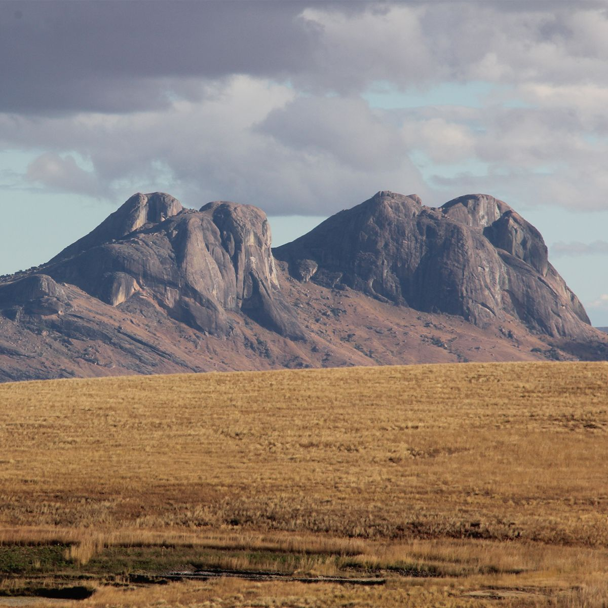

Juni 2020Der Dschungelexpress von Madagaskar
Der Dschungelexpress von Madagaskar Eine Fahrt auf einer der beiden noch funktionierenden Eisenbahnlinien Madagaskars von Fianarantsoa im Hochland hinab nach Manakara an die Ostküste, in den betagten Waggons des „Dschungelexpress“ bedeutet „Madagaskar pur“.Die Strecke führt auf einer der beiden noch funktionierenden Eisenbahnlinien Madagaskars von Fianarantsoa im Hochland hinab nach Manakara an die Ostküste. Unzählige Male sind die Gleise von Zyklonen verwüstet und danach wieder mühevoll hergerichtet worden. Für viele Einheimische ist die Bahn die einzige Möglichkeit, von den Bergen in eine Stadt zu kommen. Deshalb ist die zweite Klasse regelmässig überfüllt, wenn sich die alte Diesellok auf den rund 14 Stunden langen Weg macht, dreimal die Woche an die Küste hinab, dreimal die Woche ins Hochland hinauf.
Weiterlesen →